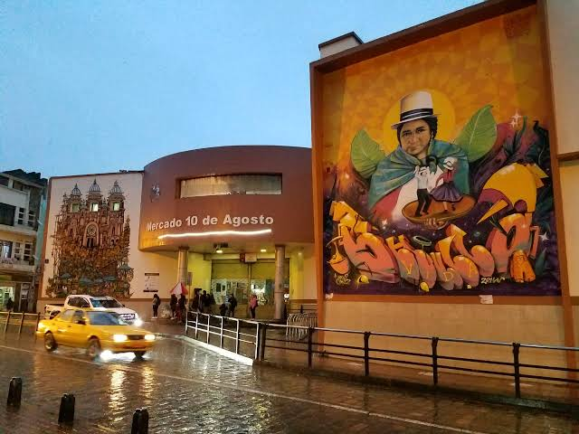

Turismo en Cuenca, Ecuador
Inicio
Historia
Lugares
Gastronomía
Contacto y mapa
Gastronomía cuencana
Platos típicos
Mote pillo
Cuy asado
Hornado
Fritada con mote

Mercado 10 de Agosto, ideal para probar comida local.